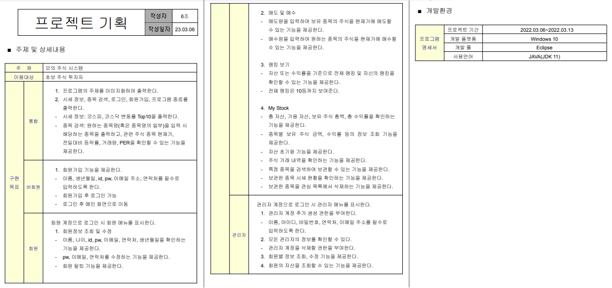
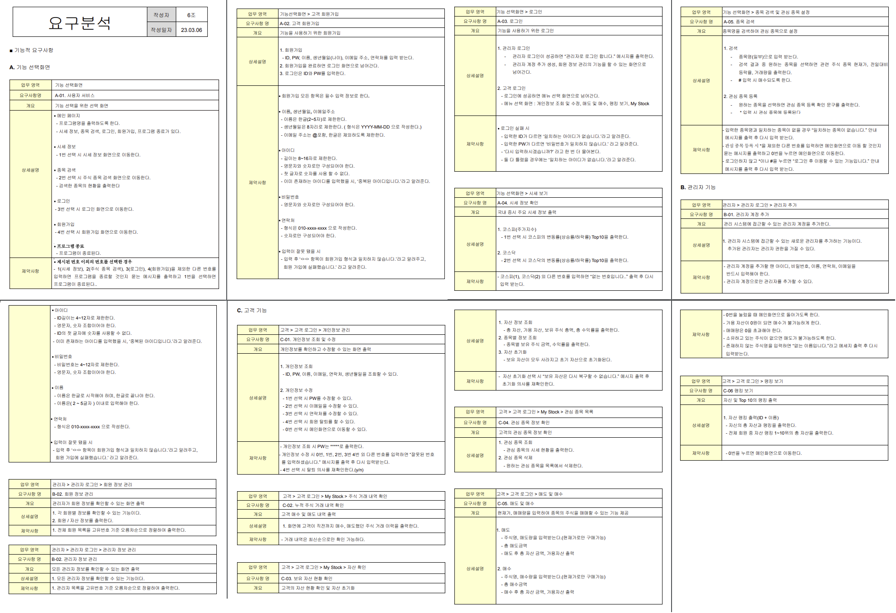
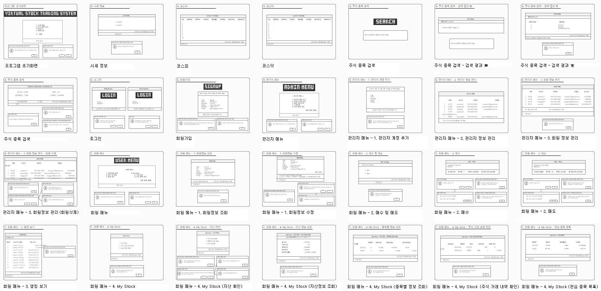

가상 주식 매매 프로그램
[Java Console Project]
증권 투자가 익숙하지 않은 일반인과 학생들이 주식 시장의 흐름과 다양한 투자를 경험할 수 있는 프로그램
1. 기획서

기획서
기획서를 작성하며 주제선정 및 분석을 통해 기존의 문제점 및 개선점을 알아보고 구현목표를 세웁니다.2. 요구분석서

요구분석서
요구분석서를 통해 기능적 요구사항을 상세하게 서술합니다.3. 화면설계(PPT)

화면 설계(PPT)
PPT를 활용한 화면 설계를 진행했습니다.4. 주요 기능
4. 느낀 점
- Jsoup을 이용한 크롤링을 처음 접하게 되었는데 개발에는 교육 과정 중에 배우지 않은 내용들이 많고 앞으로 더욱 정진해야 되는 것을 느꼈습니다.
- 또한 자바에 대한 프로젝트를 진행함으로써 해당 언어가 더욱 친숙하게 느껴지는 경험이 되었습니다. 다만 환경이 자바 콘솔로 제한되는 조건이 있어서 접근성과 ui가 아쉬움이 남습니다.
- 처음으로 진행한 프로젝트로 오류사항을 팀원들과 공유, 해결하는 과정이 탐구적이고 재미있었으며 보람을 느꼈습니다.